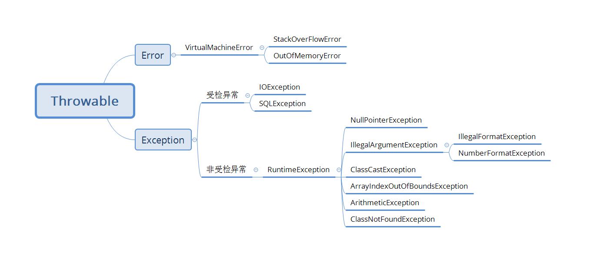

Java基础
基本数据类型
| 类型 | 字节 | 范围 |
|---|---|---|
| byte | 1 | -2^7 ~ 2^7-1 |
| char | 2 | 0 ~ 65535(2^16-1) |
| short | 2 | -2^15 ~ 2^15-1 |
| int | 4 | -2^31 ~ 2^31-1 |
| long | 8 | -2^63 ~ 2^63-1 |
| float | 4 | 32为IEEE754单精度范围 |
| double | 8 | 64位IEEE754双精度范围 |
| boolean | java规范没有规定 |
字节(byte)单位为B; 位(bit)的单位为b; 1B = 8b
java中char在内容中采用unicode编码字符集进行存储, 所以是两个字节
BigDecimal
BigDecimal使用equals比较时, 即使值相同, 但是标度不同, 返回的也是false; 而compareTo方法进行比较时, 会忽略精度.
BigDecimal优先使用string作为形参的构造方法, 因为这个方法不会损失精度.
double
由于浮点型数据存储特点, 所以浮点型数据判断是否相等时, 不能直接使用等于进行比较, 而是应该限定在一定的误差范围内, 都视为相等.
double b = 2.6 + 2.7;
double a = 5.3;
System.out.println(a == b);
System.out.println(Math.abs(b - a) < 1e-7);
输出结果:
false
true
自动拆箱注意事项
Integer a = null;
if(a == 2){
System.out.println("ok");
}
上面这段代码执行会抛出空指针异常.
原因在于自动拆箱语法糖, 可以将上面代码生成的class文件反编译看到:
Integer a = null;
if(a.intValue() == 2){
System.out.println("ok");
}
显然, 如果a为null, 则会抛出NullPointerException.
特别的, 对于有些场景下的比较, 有一些最佳实践:
static final Integer MARK = 2;
if(MARK.equals(a))
...
if(Boolean.TRUE.equals(arg))
...
String
String str = new String("aaa");创建了几个对象? 答: 创建对象数是1个或者2个. 首先, 通过new肯定会创建一个对象. 此外字符串常量"aaa"首次加载时, 会创建一个常量池, 在堆上创建一个对象, 引用常量池变量. 但是什么时候是首次加载是不一定的, 所以是1个或者2个对象.intern, 当一个String调用intern()方法时, java查找常量池中是否有相同Unicode的字符串常量, 如果有, 则直接返回其引用, 如果没有, 则在常量池中增加一个Unicode等于str的字符串并返回它的引用.- 字符串在编译期的长度限制为65535. 在运行时长度大小为int类型最大值,即
2^31-1
字符串常量池
在jdk1.6及之前版本, 字符串常量池通常被实现为方法区的一部分, 即永久代(用于存储类信息, 常量池, 静态变量, 即时编译器编译后的代码等数据). jdk1.7开始, 字符串常量池的实现方式发生了重大改变. 字符串常量池不再位于永久代, 而是直接存放在堆(Heap)中, 与其他对象共享堆内存. 之所以放到堆中主要是因为永久代回收效率太低, 只有在FullGC的时候才会被执行回收.
字符串常量来源一般有两个: 1. 代码中的字符串字面量, 会在编译后进入class文件的常量池; 2. intern()方法
split
String str = ",,,1,2,,,,,";
String[] strArr = str.split(",");
for(String s : strArr){
System.out.println(">" + s);
}
上面代码运行结果是:
>
>
>
>1
>2
结尾的空字符串被丢弃了!
查看源码, 代码是这样的:
public String[] split(String regex){
return split(regex, 0);
}
在查看一下两个参数的split方法:
public String[] split(String regex, int limit);
通过查看注释, 可以了解limit参数的意义:
- limit > 0: regex对应的模式至多被应用 limit ~ 1次. 返回数组的长度不会超过limit的长度. 数组最后一个元素的将包含所有超出最后一个匹配的分割符.
- limit = 0: regex对应的模式将会被应用尽可能多的次数. 返回的数组长度不固定. 所有尾部空字符将会被丢弃.
- limit < 0: regex对应的模式将会被应用尽可能多的次数. 返回的数组长度不固定.
limit > 0时, 代码中才会认真对待limit的具体值, 如果limit<=0, limit具体值是多少都无所谓.
以"boo:and:foo"为例:
- 分割符':'
| limit | result |
|---|---|
| 2 | { "boo", "and:foo" } |
| 5 | { "boo", "and", "foo" } |
| -2 | { "boo", "and", "foo" } |
- 分割符'o'
| limit | result |
|---|---|
| 5 | { "b", "", ":and:f", "", "" } |
| -2 | { "b", "", ":and:f", "", "" } |
| 0 | { "b", "", ":and:f" } |
所以, 开头那段代码, 如果想保留结尾的空字符串, 只需将limit设置为小于0即可.
编码规范
- RPC调用时, 接口返回类型, 建议不要使用基础类型而是包装类型. 因为可以返回null, 在异常情况下返回null要比返回0等更合适.
- POJO对象中如果有布尔值, 不要以is开头, 否则部分框架解析会引起序列化错误.
语法糖
- 泛型:
List<String> list = new ArrayList<>();-->List list = new ArrayList(); - 自动装箱与拆箱:
int a = 1; Integer b = a;-->int a = 1; Integer b = Integer.valueOf(a); - 方法变长参数:
int aaa(int... args){}-->int aaa(int[] args){} - 枚举:
public enum E{A, B;}-->public final class E extends Enum{/*也有些细节, 忽略了*/} - 内部类: 编译完成后就变成两个文件了
- 断言:
int a = 1; int b = 1; asset a == b;-->int a = 1; int b = 1; if(!$assertionsDisabled && a != b) throw new AssertionError(); - 增强for:
for(int a : list)-->int a; for(Iterator itr = list.iterator(); itr.hasNext(); ){a = itr.next();} - try-with-resource:
tryy(xxxx){}catch(Exception e){}-->太复杂了, 忽略 - Lambda表达式
- 数值字面量:
int a = 10_000-->int a = 10000 - 条件编译:
final boolean t = true; if(t){xxxx}-->final boolean t = true; xxxx - switch支持String和枚举: switch只支持基本类型的比较, 对于String需要先转换为用hashCode进行比较, 然后内部在用equals方法进行比较;
泛型上下界
上界: <? extends XXX>, 只是参数化类型可能是XXX或者XXX的子类, 下界: <? super XXX>, 指示参数化类型可能是XXX或者XXX的父类.
上界生产, 下界消费. 如果需要从一个集合中读取内容, 需要使用上界, 这个集合是用来生产的. 如果向一个集合中写入数据, 需要使用下界, 这个集合是用来消费的.
java对象的创建方法
- new
User u = new User();
- 反射
User user = User.class.newInstance();
- clone
- 反序列化
- 方法句柄
MethodType mt = MethodType.methodType(void.class); // 构造方法句柄返回类型为void, 空参
MethodHandles.Lookup lookup = MethodHandles.lookup();
MethodHandle constructorHandle = lookup.findConstructor(User.class, mt);
User user = (User)constructorHandle.invoke();
- Unsafe
Field field = Unsafe.class.getDeclaredField("theUnsafe");
field.setAccessible(true);
Unsafe unsafe = field.get(null);
long nameOffset = unsafe.objectFieldOffset(User.class.getDeclaredField("name"));
long ageOffset = unsafe.objectFieldOffset(User.class.getDeclaredField("age"));
User user = (User)unsafe.allocateInstance(User.class);
unsafe.putObject(user, nameOffset, "Hollis");
unsafe.putInt(user, ageOffset, 12);
文件IO
这里说的IO不仅仅含有普通的文件IO流, 也会介绍socket输入输出等.
Java基本IO流
java IO流可以分为两类:
- 字节流: 以字节为单位(8bit), 包含两个抽象类: InputStream, OutputStream
- 字符流: 以字符为单位(8bit), 根据码表映射字符, 包含两个抽象类: Reader, Writer
常用字节流:

常用字符流:

从图上可以看出, 字节流的基本实现类是: FileOutputStream和FileInputStream, 其余的实现都是采用装饰者模式对其进行的增强. 这其中OutputStreamWriter/InputStreamReader是将字节流装饰为字符流.
File
File file = new File(path);
- createNewFile() // 创建一个新的文件
- delete() // 删除file对象
- isFile() // 判断是否是文件
- isDirectory() //判断是否是文件夹
- exists() //判断文件或文件夹是否存在
- listFiles() //若对象代表目录, 返回该目录下所有, 文件及文件夹
- mkdir() // 创建目录
错误及异常
结构:

- Error是程序运行期间出现的错误, 该错误是不可恢复的. 因此程序中不建议捕获Error, 即catch中不应捕获Error.
- Exception表示可恢复的异常, 是编译器可以捕捉到的. 它包含两种类型: 受检异常和运行时异常.
public class ExceptionDemo {
public static void triggerThrowable() throws FrogThrowable {
throw new FrogThrowable();
}
public static void triggerError(){
throw new FrogError();
}
public static void triggerCheckException() throws FrogCheckException {
throw new FrogCheckException();
}
public static void triggerRuntimeException(){
throw new FrogRuntimeException();
}
public static class FrogThrowable extends Throwable{
public FrogThrowable() {
super("frog throwable.");
}
}
public static class FrogError extends Error{
public FrogError(){
super("frog error");
}
}
public static class FrogCheckException extends Exception{
public FrogCheckException() {
super("frog check exception.");
}
}
public static class FrogRuntimeException extends RuntimeException{
public FrogRuntimeException() {
super("frog funtime exception.");
}
}
}
通过上面代码可以Throwable和Exception是受检的, 必须catch或者抛出. Error和RuntimeException是非受检的, 不必catch或抛出. 另外非受检异常虽然也可以抛出或catch, 但是Error不建议catch.
ClassNotFoundException和NoClassDefFoundError区别是什么?
ClassNotFoundException是一个受检异常, 通常由Class.forName()或者加载器loadClass或者findSystemClass时, 在类路径中没有找到指定名称的类时, 会抛出异常. NoClassDefFoundError是一个错误, 它表示运行时尝试加载一个类的定义时, 虽然找到了类文件, 但在加载/解析/连接类过程中发生了问题.
动态代理
动态代理实现有两种方式:
- JDK动态代理: 动态代理的对象必须实现一个或者多个接口.
- Cglib动态代理: 没有限制
JDK动态代理:
public static void main(String[] args){
Demo ttt = new Demo();
Object proxy = Proxy.newProxyInstance(Demo.class.getClassLoader(), new Class[]{DemoInf.class}, new InvocationHandler() {
@Override
public Object invoke(Object proxy, Method method, Object[] args) throws Throwable {
System.out.println("---");
Object r = method.invoke(ttt, args);
System.out.println("---");
return r;
}
});
((DemoInf)proxy).ttt();
}
public interface DemoInf{
void ttt();
}
public static class Demo implements DemoInf{
public void ttt(){
System.out.println("ttt");
}
}
Cglib动态代理:
public static void main(String[] args){
Enhancer enhancer = new Enhancer();
enhancer.setSuperclass(Demo.class);
enhancer.setCallback(new MethodInterceptor() {
@Override
public Object intercept(Object obj, Method method, Object[] args, MethodProxy methodProxy) throws Throwable {
System.out.println("---");
methodProxy.invokeSuper(obj, args);
System.out.println("---");
return null;
}
});
Object proxy = enhancer.create();
((Demo)proxy).ttt();
}
public interface DemoInf{
void ttt();
}
public static class Demo implements DemoInf{
public void ttt(){
System.out.println("ttt");
}
}
java注解
注解用于为java代码提供元数据. 注解本身并不是代码的一部分，它们不会直接影响代码的执行，但可以在编译、类加载和运行时被读取和处理。(注解是给程序用的注释)
java中有四个元注解(定义其他注解的注解):
Target: 表示注解可以用在什么地方; 例如: 类(ElementType.TYPE), 方法(ElementType.METHOD)等等.Retention: 表示在什么级别保存该注解信息; 有三个可选值: 运行时(RetentionPolicy.RUNTIME), 编译时(RetentionPolicy.SOURCE), 源码中(RetentionPolicy.SOURCE)Documented: 指示将注解包含在javadoc中;Inherited: 允许子类继承父类中的注解.
UUID
UUID全局唯一标识符, 是指在一台机器上生成的数字, 它的目标是保证对在同一时空中所有机器都是唯一的. 有多个不同版本:
- v1: 基于时间戳的UUID -- 时间戳+随机数+机器MAC
- 不安全: 大量UUID样本可以反向解析出MAC地址, 进而获取到设备的物理位置或者用户信息.
- v2: DCE(Distributed Computing Environment)安全的UUID -- 与v1版本相同, 但是会把时间戳前4位换为POSIX的UID或GID
- 实际中很少用到
- v3: 基于名称空间的UUID, 对名称空间使用MD5散列
- 保证了相同名称空间中不同名称生成的UUID唯一性; 保证了不同名称空间中UUID的唯一性. 相同名称空间相同名称的UUID重复生成的到的结果是相同的.
- v4: 基于随机数的UUID -- 由随机数生成器生成
- 不适合数据量特别大场景
- v5: 和v3类似, 只是散列计算使用的是SHA1算法
java中生成UUID使用的是v3和v4两种
v3:UUID.randomUUID(), v4:UUID.nameUUIDFromBytes(new bytes[]{ 1, 2, 3, 4})
各种java对象
- POJO: Plain Ordinary Java Object, 简单的java对象.
- POJO持久化后就是PO;
- 用它传递, 传递过程中它就是DTO;
- 直接用来对应表示层就是VO;
- POJO、PO、DTO、VO都是处理流程中的名字，不是PO对应一个POJO，DTO对应一个POJO，VO对应一个POJO在有些情况下PO、DTO、VO是指同一个POJO
- PO: Persistence Object, 持久层对象, (同DO, Data Object)
- DO: Domain Object 领域对象，就是从现实世界中抽象出来的有形或无形的业务实体
- DTO: Data Transfer Object, 数据传输对象
- VO: value object 值对象/ view object 表现层对象
一些术语
- SDK: Software Development Kit, 即软件开发工具包, 是一组工具,库,文档和示例代码的集合
- SPI: Service Provider Interface, 是由框架或库提供方定义的接口，供第三方开发者进行具体实现. SPI侧重于接口的定义和实现者的开发，它定义了一种服务提供者和服务使用者之间的协议，用于实现可插拔的组件。
- API: Application Programming Interface, 是由开发者主动编写并公开给其他开发者使用的.
AIO, BIO, NIO
- BIO: (Blocking I/O), 同步阻塞IO. 线程发起请求后, 一直阻塞, 直到缓冲区数据就绪后, 再进入下一步操作;
- 适用于: 连接数较少且稳定的场景
- NIO: (Non-Blocking I/O), 同步非阻塞IO. 线程发起IO请求后, 不需要阻塞, 立即返回. 用户线程不原地等待IO缓冲区, 可以先做一些其他操作, 只需要定时轮询检查IO缓冲区是否就绪即可.
- 适用于: 高并发场景 (即连接数目多且连接比较短的场景)
- AIO: (Asynchronous I/O), 异步非阻塞I/O模型. 线程发起IO请求后, 不需要阻塞, 立即返回, 也不需要定时轮询检查结果, 异步IO操作之后会回调通知调用方.
- 适用于: 高吞吐量场景 (即连接数目多且连接比较长的场景)
以读取文件的IO为例:
- BIO
/**
* 写文件
*/
public static void writeFile(){
try(
FileWriter fileWriter = new FileWriter("xxxxx");
BufferedWriter bufferedWriter = new BufferedWriter(fileWriter)
){
bufferedWriter.write("xxxxxx");
bufferedWriter.newLine();
}catch (IOException e){
e.printStackTrace();
}
}
/**
* 读文件
*/
public static void readFile(){
try(
FileReader fileReader = new FileReader("xxxxxx");
BufferedReader bufferedReader = new BufferedReader(fileReader)
){
String line;
while((line = bufferedReader.readLine()) != null){
System.out.println(line);
}
}catch (IOException e){
e.printStackTrace();
}
}
- NIO
/**
* 写文件
*/
public void writeFile(){
try(
FileChannel fileChannel = FileChannel.open(Paths.get("xxxx"), StandardOpenOption.CREATE, StandardOpenOption.WRITE)
){
ByteBuffer buffer = StandardCharsets.UTF_8.encode("xxxxxx");
fileChannel.write(buffer);
}catch (IOException e){
e.printStackTrace();
}
}
/**
* 读文件
*/
public void readFile(){
try(
FileChannel fileChannel = FileChannel.open(Paths.get("xxxx"), StandardOpenOption.READ)
){
ByteBuffer buffer = ByteBuffer.allocate(1024);
int bytesRead = fileChannel.read(buffer);
while (bytesRead != -1) {
buffer.flip();
System.out.println(StandardCharsets.UTF_8.decode(buffer));
buffer.clear();
bytesRead = fileChannel.read(buffer);
}
}catch (IOException e){
e.printStackTrace();
}
}
看似和BIO逻辑上没什么区别, 实际上底层是不一样的. NIO底层可能有多个channel共用一个线程, 通过Selector主动轮询监控多个Channel上的事件.
- AIO
/**
* 写文件
*/
public static void writeFile(){
try(
AsynchronousFileChannel fileChannel = AsynchronousFileChannel.open(Path.of("aaa.txt"), StandardOpenOption.WRITE, StandardOpenOption.CREATE)
){
ByteBuffer buffer = StandardCharsets.UTF_8.encode("xxxx");
fileChannel.write(buffer, 0, null, new CompletionHandler<>() {
@Override
public void completed(Integer result, Object attachment) {
System.out.println("finish");
}
@Override
public void failed(Throwable exc, Object attachment) {
exc.printStackTrace();
}
});
}catch (IOException e){
e.printStackTrace();
}
}
/**
* 读文件
*/
public static void readFile(){
try{
AsynchronousFileChannel fileChannel = AsynchronousFileChannel.open(Path.of("aaa.txt"), StandardOpenOption.READ);
ByteBuffer buffer = ByteBuffer.allocate(1024);
fileChannel.read(buffer, 0, buffer, new CompletionHandler<>() {
@Override
public void completed(Integer result, ByteBuffer attachment) {
attachment.flip();
System.out.println(StandardCharsets.UTF_8.decode(attachment));
attachment.clear();
try {
fileChannel.close();
} catch (IOException e) {
e.printStackTrace();
}
}
@Override
public void failed(Throwable exc, ByteBuffer attachment) {
exc.printStackTrace();
try {
fileChannel.close();
} catch (IOException e) {
e.printStackTrace();
}
}
});
}catch (IOException e){
e.printStackTrace();
}
}